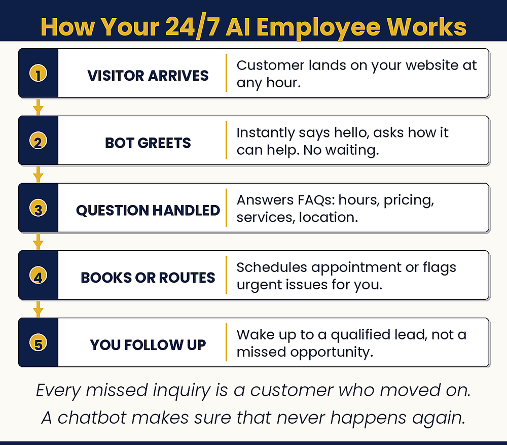

Chapter 9: Employee of the Year
The One Who Works 24/7/365 and Never Calls in Sick
How can I make my business more responsive without increasing my workload?

Chapter Recap
Every missed call or late reply can be a lost sale. A chatbot fixes that. It is like an employee who works all day and night and never calls in sick. It answers common questions in seconds and passes the hard ones to you. This chapter shows how to set one up and what it should know. Fast, friendly answers make small businesses feel big. Customers notice.
In This Chapter
- The Cost of Missing a Customer
- What Your Chatbot Should Know
- Setting Up Your First Chatbot
- When Do You Need a Human?
- Your Chatbot’s Performance
- Beyond Websites: All Touchpoints
- What Great Customer Service Actually Feels Like
- The Improvement Feedback Loop
Grab-and-Go Prompts
1. Chatbot Greeting — paste into your chatbot platform
Hi! I’m the virtual assistant for [Business Name]. I can answer most questions instantly, or connect you with our team if you need more help. What can I help you with today?
2. Handoff to a Human — when the bot can’t help
Good to know. I want to make sure you get the right answer. Let me connect you with our team. What’s the best email or phone number to reach you?
3. Improve Your Knowledge Base — paste unresolved chats monthly
Here are questions my chatbot couldn’t answer. What additions to my knowledge base would have resolved each one? [paste unresolved conversations]
4. Text Message Templates — for the most common texts
Write five text message templates for a [business type] covering: confirming an appointment, following up after a service is complete, responding to a price inquiry, handling a rescheduling request, and asking for a review. Keep each under 160 characters and make them sound like a real person, not a corporate auto-reply.
Download
- 📄 Chatbot Script Template — ready-to-use responses for common small-business questions, by industry.
Your Move
Make your list of the ten most common questions your business receives. Then go to tidio.com and sign up for the free plan. Install it on your website and answer all ten questions. Set your greeting message and go live. While you’re at it, enable the call, website, and booking buttons in your Google Business Profile dashboard. It takes two minutes and captures inquiries from anyone searching for you by name. You can have both running before the end of the week.

Read the full chapter in
AI Jiu-Jitsu: Run Circles Around the Big Guys, the book this toolbox comes from.
Prefer to have it done for you? BreakThru Growth can build and configure a chatbot for your business → BreakThruGrowth.com